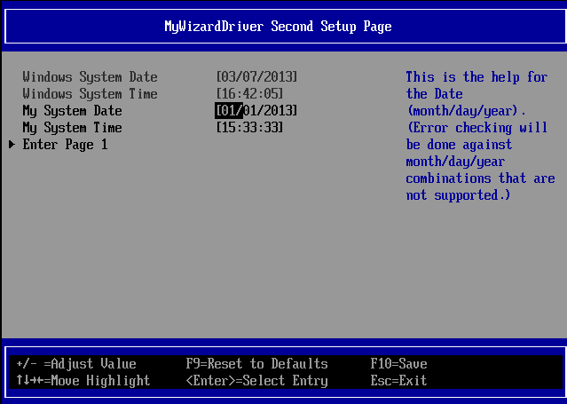
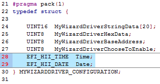
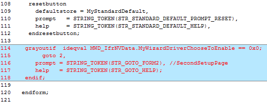
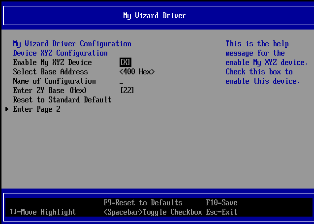
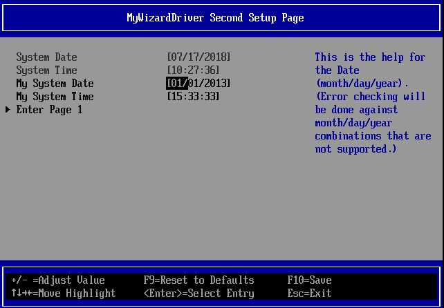
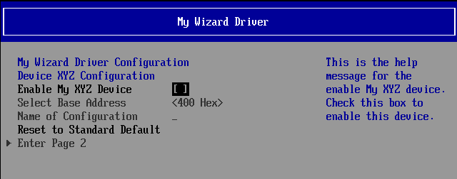

Lab 10. Adding an Additional Form Page
In this lab, you’ll learn how to add another form page to your My Wizard Driver menu by using the “goto” VFR term along with the “form” and “formid” VFR statements. Additionally, use “surpressif” or “grayoutif” to conditionally allow the user to enter your additional forms.
In addition, this lab will show how the “time” and “date” VFR terms are used within the VFR language to special case how the browser engine checks the time instead of your driver manually checking (e.g. leap year). 
Figure 10: Second setup page
- Update the MyWizardDriverNVDataStruc.h file
- Add the following date and time fields to the configuration
typedef(to to the location shown below):
EFI_HII_TIME Time; EFI_HII_DATE Date; - Save MyWizardDriverNVDataStruc.h
- Update the MyWizardDriver.uni file
- Add the following code to the end of the file to update the second page’s string:
#string STR_FORM2_TITLE #language en "MyWizardDriver Second Setup Page"
#string STR_DATE_PROMPT #language en "System Date"
#string STR_DATE_HELP #language en "This is the help for the Date (month/day/year). (Error checking will be done against month/day/year combinations that are not supported.)"
#string STR_TIME_PROMPT #language en "System Time"
#string STR_TIME_HELP #language en "This is the help for the Time (hour/minute/second)."
#string STR_ERROR_POPUP #language en "You typed in the wrong value!"
#string STR_GOTO_FORM1 #language en "Enter Page 1"
#string STR_GOTO_FORM2 #language en "Enter Page 2"
#string STR_GOTO_HELP #language en "This is my goto help"
#string STR_MY_DATE_PROMPT #language en "My System Date"
#string STR_MY_TIME_PROMPT #language en "My System Time"
6). Save MyWizardDriver.uni
7). Update the MyWizardDriver.vfr file
8). Add the “goto” VFR item to allow browser to ender another form by adding the following code before the "endform” at approx. line 114
grayoutif ideqval MWD_IfrNVData.MyWizardDriverChooseToEnable == 0x0;
goto 2,
prompt = STRING_TOKEN(STR_GOTO_FORM2), //SecondSetupPage
help = STRING_TOKEN(STR_GOTO_HELP);
endif;

9). Add the following code between “endform” at approx. line 120 and “endformset” (the code continues for few pages in this lab guide):
// Begin code
form formid = 2, // SecondSetupPage,
title = STRING_TOKEN(STR_FORM2_TITLE);
grayoutif TRUE; // DATE is the date of the Windows Host so can not change it.;
date year varid = Date.Year, // Note that it is a member of NULL,
//so the RTC will be the system resource to retrieve and save from
prompt = STRING_TOKEN(STR_DATE_PROMPT),
help = STRING_TOKEN(STR_DATE_HELP),
minimum = 1998,
maximum = 2099,
step = 1,
default = 2010,
month varid = Date.Month, // Note that it is a member of NULL,
//so the RTC will be the system resource to retrieve and save from
prompt = STRING_TOKEN(STR_DATE_PROMPT),
help = STRING_TOKEN(STR_DATE_HELP),
minimum = 1,
maximum = 12,
step = 1,
default = 1,
day varid = Date.Day, // Note that it is a member of NULL,
//so the RTC will be the system resource to retrieve and save from
prompt = STRING_TOKEN(STR_DATE_PROMPT),
help = STRING_TOKEN(STR_DATE_HELP),
minimum = 1,
maximum = 31,
step = 0x1,
default = 1,
enddate;
endif; //grayoutif TRUE DATE
grayoutif TRUE; // TIME – WINDOWS TIME
time hour varid = Time.Hour, // Note that it is a member of NULL,
//so the RTC will be the system resource to retrieve and save from
prompt = STRING_TOKEN(STR_TIME_PROMPT),
help = STRING_TOKEN(STR_TIME_HELP),
minimum = 0,
maximum = 23,
step = 1,
default = 0,
minute varid = Time.Minute, // Note that it is a member of NULL,
//so the RTC will be the system resource to retrieve and save from
prompt = STRING_TOKEN(STR_TIME_PROMPT),
help = STRING_TOKEN(STR_TIME_HELP),
minimum = 0,
maximum = 59,
step = 1,
default = 0,
second varid = Time.Second, // Note that it is a member of NULL,
//so the RTC will be the system resource to retrieve and save from
prompt = STRING_TOKEN(STR_TIME_PROMPT),
help = STRING_TOKEN(STR_TIME_HELP),
minimum = 0,
maximum = 59,
step = 1,
default = 0,
endtime;
endif; //grayoutif TRUE TIME
date // My Wizard Driver Date
varid = MWD_IfrNVData.Date ,
prompt = STRING_TOKEN(STR_MY_DATE_PROMPT),
help = STRING_TOKEN(STR_DATE_HELP),
flags = STORAGE_NORMAL,
default = 2013/01/01,
enddate;
time // My Wizard Driver Time
name = MyTimeMWD,
varid = MWD_IfrNVData.Time,
prompt = STRING_TOKEN(STR_MY_TIME_PROMPT),
help = STRING_TOKEN(STR_TIME_HELP),
flags = STORAGE_NORMAL ,
default = 15:33:33,
endtime;
goto 1,
prompt = STRING_TOKEN(STR_GOTO_FORM1), //MainSetupPage
// this too has no end-op and basically it's a jump to a form ONLY
help = STRING_TOKEN(STR_GOTO_HELP);
endform;
// End code
10). Save MyWizardDriver.vfr
Build and test MyWizardDriver
- Open the Visual Studio Command Prompt
- Type build
- Type build run
- At the UEFI Shell prompt,type exit
- Now at the setup front page menu, select “Device Manager”
- Inside the Device Manager menu press the down arrow to “My Wizard Driver Sample Formset” Press "Enter"

Notice the “Enter Page 2” option. Withoutgotoin theMyWizardDriver.vfrfile, you wouldn’t be able to access page two. - Select “Enter Page 2” and then Press “Enter”
Notice how the System Date and Time cannot be modified to any other date/time and is grayed out:  - Test by trying to enter the date 02/30/2013, then try a valid leap year date: 02/29/2012.
- Press “Down Arrow” to return to Page 1
- Test the “
grayoutif”by going to “Enable My XYZ Device” - Press the “Spacebar” to toggle off/disable
Notice the “Select Base Address” , “Name of Configuration” and the “Enter Page 2” fields are now grayed out and not selectable  - Press “Space bar” again to Enable
- Press “F10” then “Escape” to save and exit
- Press “Escape” to exit “Device Manager”
- Select “Continue” and then Press "Enter”
- Type “reset”

at the Shell prompt and then Press “Enter” to return to the Visual Studio Command Prompt
For any build issues copy the solution files from C:\Fw\LabSolutions\LessonE.10
NOTE: Del Directory C:\fw\edk2\Build\NT32IA32\DEBUG_VS2010x86\IA32\MyWizardDriver before the Build command to build the MyWizardDriver Clean.